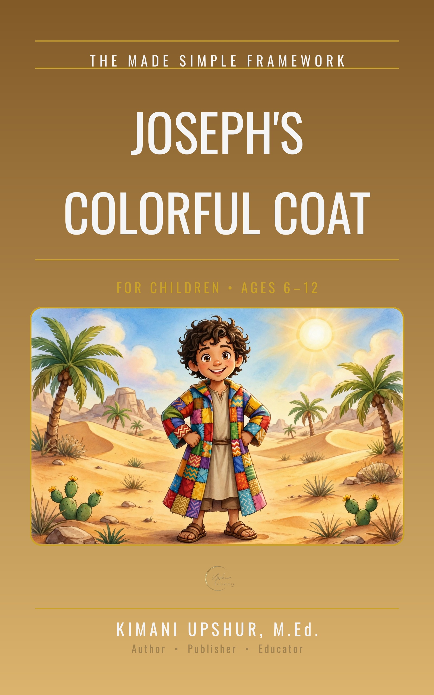

Home / Kids & Teens / Children

More Children Books
Explore the full collection of books for children.
Home / Kids & Teens / Children

Explore the full collection of books for children.
Join readers growing in faith one simple truth at a time.